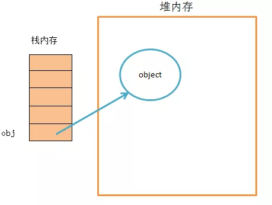
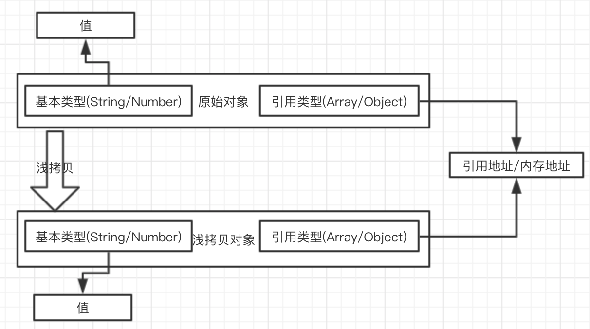
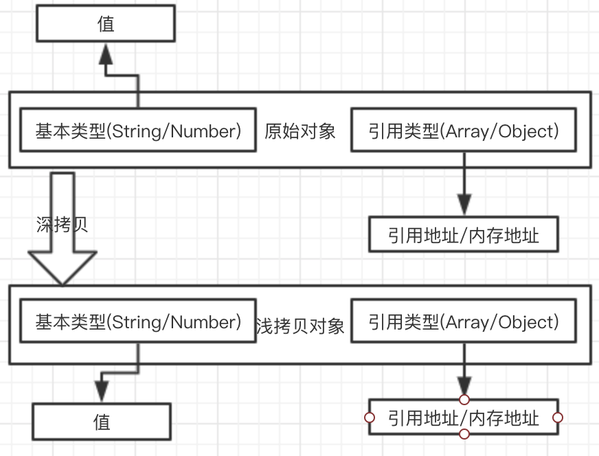

深拷贝系列 ———— 什么是深拷贝、浅拷贝、Object.assign
深拷贝系列 ———— 自己实现一个JSON.stringify和JSON.parse
深拷贝系列 ———— 自己通过递归实现一个深拷贝
深拷贝系列 ———— 分析lodash中的deepcopy
简介
首先我们要了解什么是深拷贝、浅拷贝，要了解深拷贝/浅拷贝首先要了解浅拷贝JavaScript中的数据类型。
JavaScript中的数据类型分为两类：
值类型/原始类型/基本类型：String、Number、Boolean、null、undefined、Symbol引用类型/“指针”类型：Object、Array、Window等等
基本类型是储存在栈(stack)中的数据。引用类型真实数据是储存在堆中的，而它的引用地址储存在栈中。

如果有兴趣了解JavaScript中的类型的话，可以看一下我往期的文章JavaScript数据类型（一） 常见数据类型，这个只是其中的一篇，有关JavaScript类型的常见的概念基本上都有提及。
基本类型是不存在深拷贝和浅拷贝的，因为基本类型是不可变的，无论是修改、重新赋值、赋值给别的变量都是一个新的值，和原来的值再无关联。
1 | var a = 'abc', |
引用类型因为是地址引用，所以会存在深拷贝和浅拷贝，下面就开始介绍。
浅拷贝简介: 创建一个新对象，这个对象有着原始对象属性值的一份精确拷贝。如果属性是基本类型，拷贝的就是基本类型的值，如果属性是引用类型，拷贝的就是内存地址，所以如果其中一个对象改变了这个地址，就会影响到另一个对象。

深拷贝: 创建一个新的对象把原始对象的所有属性的拷贝一份，并且引用类型的引用地址和内存空间都会被拷贝一份，重新分配内存空间。修改新对象不会影响原始对象。

本章主要记录深拷贝/浅拷贝，主要讲解浅拷贝相关的如assign、解构、扩展运算符、slice等等，后面的文章会由浅到深的的介绍深拷贝相关的。
浅拷贝
虽然看着浅拷贝比较简单，其实它就是比较简单，但是它相关的东西也不少，下面就开始吧。
- Object.assign() & 自己实现一个Object.assign()
- Array.prototype.slice()
- Array.prototype.concat()
- 解构
- …扩展运算符
- jquery.extend()
- 自己实现一个浅拷贝
Object.assign()
语法: Object.assign(target, ...sources);返回值: target对象
ES6中拷贝对象的方法，接受的第一个参数是拷贝的目标target，剩下的参数是拷贝的源对象sources（可以是多个）
1 | var target = { firstname: 'target', age: 20 }; |
在上面的代码中我们可以看到通过Object.assign(target, source);会返回一个新的值newtarget，这个值的引用地址与target是同一个地址，所以修改newtarget.age = 22;后target和newtarget都会变化。Object.assign({}, source)返回的newSource它被修改不会影响到source的变化，因为他的target传入的是一个空对象。
自己实现一个assgin
实现目标
- 第一个
target - 支持多个对象合并
- 与Object.assign表现一至
大致分为下面几步：
- 判断传入
target如果不为对象，或者 传入为null时直接返回Object(target) - 获取所有参数，参数列表转为
Array类型 - 循环上一步生成数组，获取每一个传入的对象
- 通过
for...in循环上一步获取的对象，并且通过hasOwnProperty判断当前属性是否是本身上的属性（不是原型上的） - 上一步通过判断的属性，赋值给
target对象 - 最后返回
target对象
函数版本
1 | // 函数版本 |
Object.defineProperty版本
1 | if (typeof Object.newAssign !== 'function') { |
Array.prototype.slice()
slice() 方法返回一个新的数组对象，这一对象是一个由 begin和 end（不包括end）决定的原数组的浅拷贝。原始数组不会被改变。slice() 它的定义其实是复制一个数组。
1 | let old = ['a', 'b', ['c', 'd']]; |
Array.prototype.concat()
concat() 方法用于合并两个或多个数组。此方法不会更改现有数组，而是返回一个新数组。
语法
var new_array = old_array.concat(value1[, value2[, ...[, valueN]]])
返回值
新的 Array 实例。
1 | var old = ['a', 'b', ['c', 'd']]; |
concat()它的效果是和slice()相同的。
解构
解构是ES6中的新特性，它可以方便的浅复制一个对象。
1 | // 声明一个对象 |
…扩展运算符
...扩展运算符也是ES6中的新特性，它可以方便的浅复制一个对象。
1 | // 声明一个对象 |
jquery.extend
jquery.extend()是一个浅拷贝，这个在这里就不多做赘述了，如果想看实现原理的话，可以去看jquerygithub上的源码实现。
自己实现一个浅拷贝
实现一个浅拷贝其实很简单，大致步骤如下：
- 声明一个新对象
- 旧对象的属性赋值给新对象
1 | // 声明函数 |
总结
在本文中我们分别介绍了深拷贝、浅拷贝是什么。着重介绍了我们日常使用的浅拷贝，并且自己实现了一个assign()和一个shallowCopy来加深对浅拷贝的理解，下一篇文件会介绍一个深拷贝相关的JSON.stringify()/JSON.parse()并且自己实现一个。
通过上面的实例，可以验证我们对浅拷贝的理解是对的，如果是基本类型浅拷贝可以把它的值拷贝到新对象中，如果是引用类型浅拷贝只能拷贝引用类型的引用地址。
参考
https://developer.mozilla.org/zh-CN/docs/Web/JavaScript/Reference/Global_Objects/Array/slice
一文搞懂JS中的赋值·浅拷贝·深拷贝